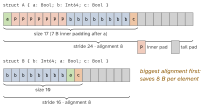
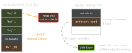

swift · folio
In one line: Exclusivity is the rule (no overlapping access where one is a
write); ownership (borrowing/consuming/
~Copyable) is the vocabulary for who owns a value and when it
dies; layout (MemoryLayout, existentials, refcount headers) is
what all of it costs in bytes and atomic ops.
Download PDF Print view LaTeX source

How it works
- Law of Exclusivity: two accesses to the same storage may not overlap in time if at least one writes. Reads overlap freely. A
mutatingcall orinoutargument is one write access lasting the whole call. - Static check (local vars, provable aliasing) = compile error, zero cost. Dynamic check (class properties, globals, vars captured by escaping closures) = runtime begin/end markers, trap “Simultaneous accesses”. On in Debug and Release since Swift 5;
-enforce-exclusivity=uncheckedturns the trap into UB. It is not a thread-race detector. ~Copyable(5.9) suppresses the implicitCopyable— not a protocol. Structs/enums only (not classes or actors). Values are moved or borrowed, never copied ⇒ single owner ⇒ a struct can havedeinit, run exactly once when the owner ends or is consumed.- Parameter ownership:
borrowing= +0 / guaranteed, read-only, caller keeps it (default for most params);consuming= +1 / owned, caller’s binding is dead after;inout= exclusive write, handed back.consume xendsx’s lifetime explicitly;consuming func close()consumesself;discard selfends it withoutdeinit. - Generics:
<T: ~Copyable>widens (6.0).Optional,UnsafePointeraccept noncopyables;Arraystill requiresCopyable. MemoryLayout<T>:size= bytes used;alignment= start boundary;stride=sizerounded up toalignment= distance between array elements. Swift keeps declaration order, so field order sets padding.- Existential
any P= 5 words (40 B): 3-word inline buffer + type metadata + 1 witness table per protocol (any P & Q= 48 B;Any= 32 B; class-bound = ref + PWTs). Value > 3 words → boxed on the heap, buffer holds the pointer. Generics /some Pspecialise and skip the box. - ARC header = 16 B: metadata (
isa) + one 64-bit inline refcount word (strong + unowned counts + flags). Aweakref or overflow moves counts to a side table; the word then points to it.swift_retain/releaseare atomic RMWs — cheap once, costly as traffic, worse under contention.borrowing/+0 and the optimiser remove pairs. Unmanaged<T>: manual ARC across a Cvoid*context.passRetained(+1) ↔takeRetainedValue(-1);passUnretained↔takeUnretainedValue(+0).toOpaque/fromOpaque.
Example
struct FileHandle: ~Copyable {
let fd: Int32
deinit { close(fd) } // runs exactly once
consuming func detach() -> Int32 {
let f = fd; discard self; return f } // no deinit
}
func read(_ h: borrowing FileHandle) {} // lend, +0
func store(_ h: consuming FileHandle) {} // take, +1
let h = FileHandle(fd: 3)
read(h); store(h)
// read(h) error: 'h' used after consume
var x = 1
swap(&x, &x) // error: overlapping accesses to 'x'Padding: same fields, new order

any P and the object header

Traps
- Array indexing / pointer maths uses stride, not size (
Int?: size 9, stride 16). - Exclusivity ≠ data-race safety — that is actors /
Sendable. It catches single-threaded reentrancy. &a[0], &a[1]conflict: subscriptinoutaccesses the whole array. UseswapAt.~Copyableis suppression, not conformance; aborrowingparam cannot be returned or stored (escapes the borrow).any Pin a hot loop maymalloc(box) and adds dynamic dispatch — prefersome P/ generics.passRetained+takeUnretainedValue= leak; the reverse = over-release crash.- “Value type = no ARC” — a struct holding a class ref retains it on copy.
Remember
“One writer, whole call.” Borrow reads, Consume takes, Inout rents — “BCI”. Pack fields big-to-small. 3 words fit in an existential; weak buys a side table.